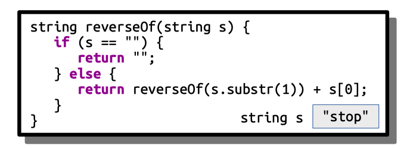
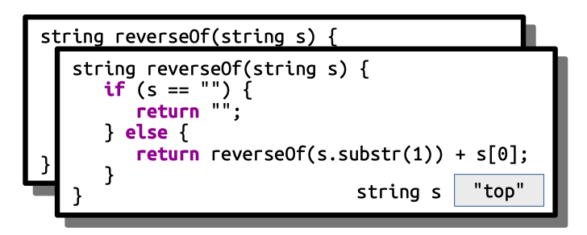
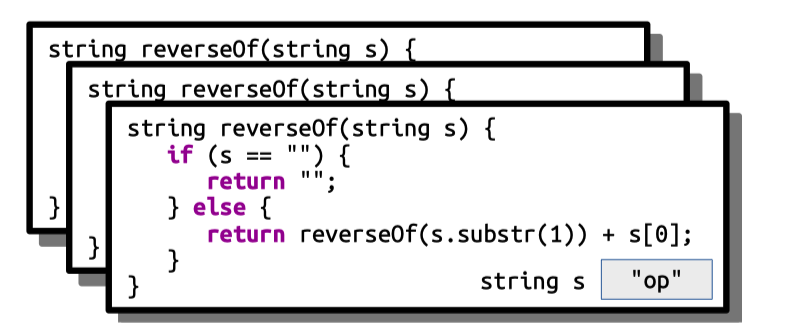
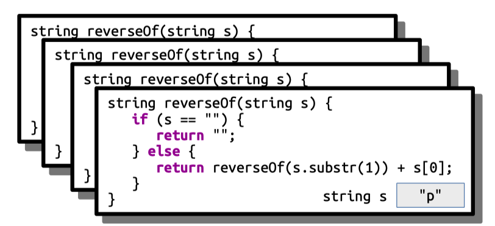
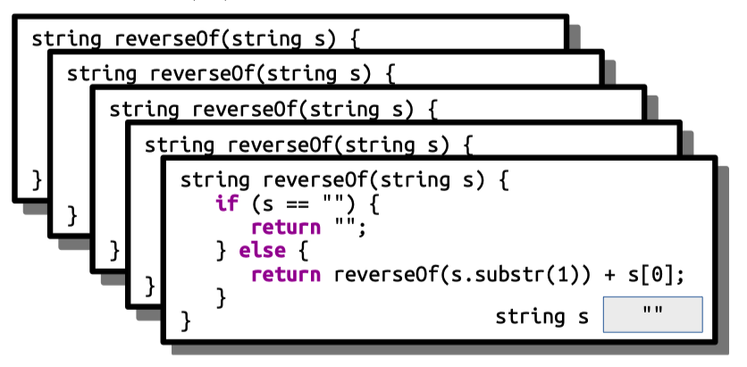
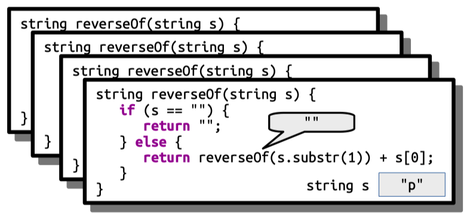
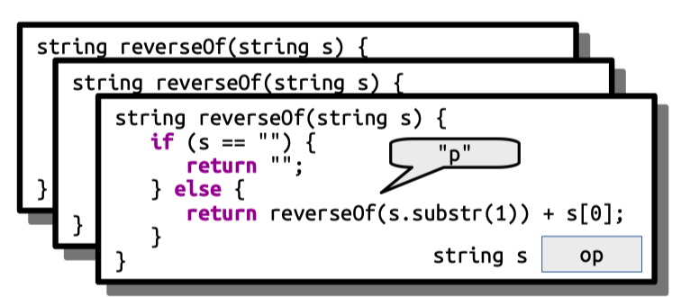
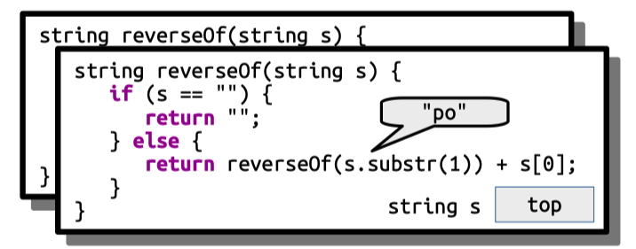

Each week, you’ll meet for about an hour in a small discussion section. Your section leader will help review the material, explore some topics in more depth, and generally answer questions as appropriate. These section problems are designed to give you some extra practice with the course material. You’re not expected to complete these problems before attending section and we won’t be grading them for credit. Instead, think of them as a resource you can use to practice with the material as you see fit. You’re not expected to cover all these problems in section, so feel free to look over the solutions to the problems you didn’t complete.
1) Returning and Printing
Topics: Function call and return, return types
Below is a series of four printLyrics_v# functions, each of which has a blank where the return type should be. For each function, determine
- what the return type of the function should be,
- what value, if any, is returned, and
- what output, if any, will be produced if that function is called.
Is it appropriate for each of these functions to be named printLyrics? Why or why not?
_____ printLyrics_v1() {
cout << "Havana ooh na na" << endl;
}
_____ printLyrics_v2() {
return "Havana ooh na na";
}
_____ printLyrics_v3() {
return "H";
}
_____ printLyrics_v4() {
return 'H';
}
void printLyrics_v1() {
cout << "Havana ooh na na" << endl;
}
string printLyrics_v2() {
return "Havana ooh na na";
}
string printLyrics_v3() {
return "H";
}
char printLyrics_v4() {
return 'H';
}
Of these four functions, only printLyrics_v1 will print anything. Specifically, it prints out the string "Havana ooh na na.". The name “printLyrics” is inappropriate for the other functions, as those functions don’t actually print anything. 😃
The function printLyrics_v1 doesn’t return anything – it just sends information to the console. As a result, its return type should be void. The functions printLyrics_v2 and printLyrics_v3 each return strings, since C++ treats anything in double-quotes as a string. Finally, printLyrics_v4 returns a char, since C++ treats anything in single-quotes as a character.
2) Recursion Tracing
Topics: Recursion, strings, recursion tracing
In lecture, we wrote the following recursive function to reverse a string:
string reverseOf(string s) {
if (s == "") {
return "";
} else {
return reverseOf(s.substr(1)) + s[0];
}
}
Trace through the execution of reverseOf("stop") along the lines of what we did in Wednesday’s lecture, showing stack frames for each call that’s made and how the final value gets computed.
Our initial call to reverseOf("stop") looks like this:

This call then fires off a call to reverseOf("top"), which looks like this:

This call fires off a call to reverseOf("op"):

This in turn calls reverseOf("p"):

This in turn calls reverseOf(""):

This triggers the base case and returns the empty string. (Notice that the reverse of the empty string "" is indeed the empty string ""):

We now append p to return "p":

We now append o to return "po":

We append t to return "pot":

And finally we append s to return "pots" back to whoever called us. Yay!
3) Testing and Debugging
Topics: Testing, loops, types, function call and return
Consider the following piece of code:
/* Watch out! This code contains many bugs! */
bool hasDoubledCharacter(string text) {
for (int i = 0; i < text.size(); i++) {
string current = text[i];
string previous = text[i - 1];
return current == previous;
}
}
This code attempts to check whether a string contains at least two consecutive copies of the same character. Unfortunately, it has some errors in it.
- Identify and fix all the errors in this code.
We can write test cases to check our work and ensure that the code indeed works as expected. Imagine you’re given the following provided test:
PROVIDED_TEST("Detects doubled characters") {
EXPECT(hasDoubledCharacter("aa"));
EXPECT(hasDoubledCharacter("bb"));
}
This test checks some cases, but leaves others unchecked. As a result, even if these tests pass, it might still be the case that the function is incorrect.
- Identify three types of strings not tested by the above test case. For each of those types of strings, write a
STUDENT_TESTthat covers that type of string.
Here’s a list of the errors in the code:
-
It uses the
stringtype instead of thechartype when representing individual characters in the string. This will cause the code to not compile. -
On the first iteration of the loop, we will try to look at the -1 st character of the string, which will probably cause a crash and definitely is wrong.
-
The
returnstatement inside the for loop means that we’ll never look at more than one pair of characters; the function will exit as soon as the return statement is executed, so we can’t progress from one iteration to the next. -
If the string doesn’t contain any doubled characters, the function never returns a value.
We can fix all of these errors by rewriting the code like this:
bool hasDoubledCharacter(string text) {
for (int i = 1; i < text.size(); i++) {
char current = text[i];
char previous = text[i - 1];
if (current == previous) {
return true;
}
}
return false;
}
To make things cleaner, we could remove the current and previous variables:
bool hasDoubledCharacter(string text) {
for (int i = 1; i < text.size(); i++) {
if (text[i] == text[i - 1]) {
return true;
}
}
return false;
}
Although we hadn't talked about pass-by-const reference in the first week of class, we really should use the pass-by-const reference here because we are reading but not modifying the text parameter.
bool hasDoubledCharacter(const string& text) {
for (int i = 1; i < text.size(); i++) {
if (text[i] == text[i - 1]) {
return true;
}
}
return false;
}
Now, let’s talk testing. Notice that the test cases we have are purely for
-
strings that have doubled characters,
-
where the doubled letters are at the beginning,
-
where there are no undoubled characters,
-
where the doubled characters are lower-case letters, and
-
that have length exactly two.
To find some classes of strings that don’t have these properties, we can simply break all of the above rules and see what we find! So let’s write tests for each of the following types of strings:
-
strings that don’t have doubled letters;
-
strings that have doubled letters, but not at the beginning;
-
strings that have doubled letters, but also some non-doubled letters;
-
strings that have doubled non-letter characters; and
-
strings whose lengths aren’t two (maybe shorter strings or longer strings).
Here’s some sample tests we could write:
STUDENT_TEST("Strings without doubled characters") {
EXPECT(!hasDoubledCharacter("abcd")); // Nothing doubled
EXPECT(!hasDoubledCharacter("aba")); // a appears twice, but not consecutively
EXPECT(!hasDoubledCharacter("Aa")); // Not technically the same character
}
STUDENT_TEST("Strings with doubled characters not at the front") {
EXPECT(hasDoubledCharacter("abb")); // Back
EXPECT(hasDoubledCharacter("abcddabc")); // Middle
}
STUDENT_TEST("Strings with doubled non-letter characters") {
EXPECT(hasDoubledCharacter("**")); // Symbols
EXPECT(hasDoubledCharacter(" ")); // Spaces
EXPECT(hasDoubledCharacter("00")); // Numbers
EXPECT(hasDoubledCharacter("!!")); // Punctuation
}
STUDENT_TEST("Short strings") {
EXPECT(!hasDoubledCharacter("")); // Too short
EXPECT(!hasDoubledCharacter("a")); // Too short
}
4) Human Pyramids
Topics: Recursion
A human pyramid is a triangular stack of a bunch of people where each person (except the person at the top) supports their weight on the two people below them. A sample human pyramid is shown below.
Your task is to write a function
int peopleInPyramidOfHeight(int n);
that takes as input the height of the human pyramid (the number of layers; the pyramid to the right has height three) and returns the number of people in that pyramid. Your function should be completely recursive and should not involve any loops of any sort. As a hint, think about what happens if you take the bottom layer off of a human pyramid.
Once you’ve written your solution, trace through the execution of peopleInPyramidOfHeight(3) similarly to how we traced through factorial(5) in class, showing each function call and how values get returned.
As a note, there’s a closed-form solution to this problem (you can directly compute how many people are in the pyramid just from the height through a simple formula). It’s described in the solutions.
The key recursive insight here is that a human pyramid of height 0 is a pyramid of no people, and that a human pyramid of height n is a group of n people supporting a human pyramid of n-1 people. Using that idea, we can write this function:
int peopleInPyramidOfHeight(int n) {
if (n == 0) {
return 0;
} else {
return n + peopleInPyramidOfHeight(n - 1);
}
}
As a note, you can directly evaluate peopleInPyramidOfHeight(n) by computing n(n + 1) / 2. We’ll see a really cool intuition for this later in the quarter!
5) Random Shuffling
How might the computer shuffle a deck of cards? This problem is a bit more complex than it might seem, and while it's easy to come up with algorithms that randomize the order of the cards, only a few algorithms will do so in a way that ends up generating a uniformly-random reordering of the cards.
One simple algorithm for shuffling a deck of cards is based on the following idea:
- Choose a random card from the deck and remove it.
- Shuffle the rest of the deck.
- Place the randomly-chosen card on top of the deck. Assuming that we choose the card that we put on top uniformly at random from the deck, this ends up producing a random shuffle of the deck.
Write a function
string randomShuffle(string input)
that accepts as input a string, then returns a random permutation of the elements of the string using the above algorithm. Your algorithm should be recursive and not use any loops (for, while, etc.).
The header file "random.h" includes a function
int randomInteger(int low, int high);
that takes as input a pair of integers low and high, then returns an integer greater than or equal to low and less than or equal to high. Feel free to use that here.
Interesting note: This shuffling algorithm is a variant of the Fisher-Yates Shuffle. For more information on why it works correctly, take CS109!
Here is one possible solution:
string randomShuffle(string input) {
/* Base case: There is only one possible permutation of a string
* with no characters in it.
*/
if (input.empty()) {
return input;
} else {
/* Choose a random index in the string. */
int i = randomInteger(0, input.length() - 1);
/* Pull that character to the front, then permute the rest of
* the string.
*/
return input[i] + randomShuffle(input.substr(0, i) + input.substr(i + 1));
}
}
This function is based on the recursive observation that there is only one possible random shuffle of the empty string (namely, itself), and then using the algorithm specified in the handout for the recursive step.
Here is another possible solution (using a modified function header) which shows how to implement this function using references and no return value. Shoutout to one of our awesome SLs, Rachel Gardner, for this alternate solution!
void randomShuffle(string &input) {
if (input == "") return;
int rand = randomInteger(0, input.length() - 1);
char chosen = input[rand];
input.erase(rand, 1);
randomShuffle(input);
input = chosen + input;
}
6) Computing Statistics
Topics: Structures, file reading, loops
Imagine you have a file containing a list of real numbers, one per line (perhaps they’re exam scores, or blood pressure numbers, etc.) Your task is to write a function
Statistics documentStatisticsFor(istream& input);
that takes as input a reference to an input stream pointed at the contents of a file, then returns a Statistics object (described below) containing statistics about that document. You can assume that the file is properly formatted and contains at least one number.
The Statistics type used here is a struct that’s defined as follows:
struct Statistics {
double min; // Smallest value in the file
double max; // Largest value in the file
double average; // Average value in the file
}
As a reminder, you can read a single value from a file by writing
double val;
input >> val;
and read all the values left in a file by writing
for (double val; input >> val;) {
// Do something with val
}
There are many ways to write this function. Here's one:
Statistics documentStatisticsFor(istream& input) {
/* Read an initial value out of the file. We're going to use this to seed
* the minimum and maximum values.
*/
double val;
input >> val; // Should do error-checking, but we'll skip that here.
/* Create a Statistics object and initialize its min and max values. */
Statistics info;
info.min = val;
info.max = val;
/* Keep track of the sum of the values and the number of values so that we
* can report back the average value. Initially, the sum is whatever value
* we just read, and the number of values read is 1.
*/
double total = val;
int numValues = 1;
/* Read the rest of the file, updating the min/max as we go along with the
* sum and number of values.
*/
while (input >> val) {
numValues++;
total += val;
if (val > info.max) info.max = val;
if (val < info.min) info.min = val;
}
/* Compute the average. */
info.average = total / numValues;
return info;
}
7) Haiku Detection
Topics: TokenScanner, procedural decomposition
A haiku is a three-line poem where the first line has five syllables, the second has seven syllables, and the final line has five syllables. For example, this poem is a haiku:
An observation:
Haikus are concise, but they
Don't always say much.
This poem is not a haiku, because the last line has six syllables.
One two three four five
Six seven eight nine ten, then
eleven, twelve, thirteen!
Your job is to write a program that reads three lines of text from the user, then checks whether those lines form a haiku. You can assume that you have access to a function
int syllablesIn(string word);
which returns the total number of syllables in a word. You can assume that the input text consists solely of words, spaces, and punctuation marks (e.g. commas and exclamation points). You may want to use the TokenScanner type here. You can use TokenScanner to break a string apart into individual units as follows:
#include "tokenscanner.h" // At the top of your program
TokenScanner scanner(str);
scanner.ignoreWhitespace();
while(scanner.hasMoreTokens()) {
string token = scanner.nextToken();
// Do something with token
}
Note: we are not providing a starter file for this one; we encourage you to think about how you want to decompose it and discuss with your section leader and section-mates!
/* We will assume that
* this function works. It's fun to
* implement. Try it!
*/
int syllablesIn(string word);
/* These are prototypes.
* They let us call these functions
* Before they're defined.
*/
bool isHaiku(string line1, string line2, string line3);
int syllablesInLine(string line);
int main() {
string line1 = getLine("Enter the first line: ");
string line2 = getLine("Now, enter the second line: ");
string line3 = getLine("Enter the third line: ");
/* Given these three lines,
* check whether they're a haiku,
* then show the result.
*/
if (isHaiku(line1, line2, line3)) {
cout << "The text you entered" << endl;
cout << "Goes 5 - 7 - 5, so it" << endl;
cout << "is a haiku. Yay!" << endl;
} else {
cout << "Though you have tried hard," << endl;
cout << "The three lines you entered are" << endl;
cout << "Not a haiku. Awww." << endl;
}
return 0;
}
/* Given a poem
* of three lines, returns whether
* it is a haiku.
*/
bool isHaiku(string line1, string line2, string line3) {
return syllablesInLine(line1) == 5 &&
syllablesInLine(line2) == 7 &&
syllablesInLine(line3) == 5;
}
/* Counts the number of
* syllables in a line of
* text, then returns it.
*/
int syllablesInLine(string text) {
/* To split apart the
* text, make a TokenScanner
* and configure it.
*/
TokenScanner scanner(text);
scanner.ignoreWhitespace();
int numSyllables = 0;
while (scanner.hasMoreTokens()) {
/* If this token is
* a word, count its syllables
* and update total.
*/
string token = scanner.nextToken();
if (scanner.getTokenType(token) == TokenScanner::TokenType::WORD) {
numSyllables += syllablesIn(token);
}
}
return numSyllables;
}
/* Did you notice that
* all the comments are haikus?
* Same with the output!
*/